- 应用
- AI Eval Platform 本地开发栈（FastAPI + Vite React）
- 分支
- agent/complete-m5-04-5c28b62b132a
- 基线
- origin/main @ 052dfb2 的同一页面（独立 worktree，同一后端与数据）
- 数据库
- 一次性 SQLite + 迁移 head 0017_eval_preparations
- 浏览器
- 系统 Chrome headless · 1440×1000（另测 1280×800）· Playwright 驱动
- 数据形态
- 1 个数据集版本（30 用例）/ 1 个模型配置 / 1 个资源池（8 上限，3 在线 Runner）/ 15 个 Skill 资产快照 / 1 个管理员
- 资产快照
- 通过真实 GitHub API 解析并用本地 S3 stub 冻结到 commit 22f0b463；向导复用该冻结快照
- 准备快照 TTL
- 冒烟环境设为 60 秒（生产默认 900 秒），用于验证过期页面提示
- 模型调用
- 未发起真实模型请求：本次只验证发起与冻结链路，不验证 Agent 执行
Browser smoke · 真实登录 / 用例子集 / 资产快照 / 执行策略 / 准备快照 / 幂等创建 / 过期与配置变化
M5-04 发起评测向导与准备快照 · 集成冒烟报告
在本地开发栈上用系统 Chrome headless 走通 M5-04 的主路径：从 origin/main 的旧向导基线开始，依次选择数据集版本与 5 个用例子集、复用冻结的 Agent 资产快照、配置并发/超时/重试/预算，服务端返回 60 秒有效的准备快照，确认页展示冻结输入、容量与费用区间，创建后进入详情并验证 5 个用例、准备快照已消费、同一 Idempotency-Key 重放返回同一评测。随后验证了准备快照过期、确认后配置变化（409）与容量非法（422）三条错误路径，以及无数据集空态。14 个检查点全部通过，未发现产品缺陷。
14检查点
0发现缺陷
14证据截图
全绿pytest / web / docs 门禁
Environment and Artifact
2026-11-10 · AI Eval Platform · M5-04 · 本地开发栈浏览器冒烟Scenario Matrix
2 info · 12 pass| # | 场景 | 结果 | 说明 | 证据 |
|---|---|---|---|---|
| 01 | 改动前基线：数据集步骤 | BASELINE | origin/main 的向导是 AntD Steps + 卡片，仅能选择数据集与版本，没有用例子集、步骤条与摘要侧栏。 | before-01-wizard-dataset.png |
| 02 | 改动前基线：资产步骤 | BASELINE | 旧向导的资产步骤只有资产树与 Ref 解析，没有 4 步导航和右侧冻结摘要。 | before-02-wizard-assets.png |
| 03 | 数据集与用例子集 | PASS | 新向导展示 4 步步骤条、数据集/版本选择与“全部 / 按数量 / 指定用例”三种范围；按数量选择 5 个用例，右侧摘要同步。 | after-01-wizard-dataset.png after-02-wizard-subset.png |
| 04 | 非敏感草稿刷新不丢 | PASS | 输入用例数量 5 后刷新页面，模式与数量从 localStorage 恢复；草稿不含任何密钥字段。 | after-02-wizard-subset.png |
| 05 | Agent 资产与冻结 commit | PASS | 向导展示已冻结的 15 个 Skill 与 commit 22f0b463；Ref 未解析时禁止进入下一步。 | after-03-wizard-assets.png |
| 06 | 模型、资源池与高级执行策略 | PASS | 选择模型与资源池，配置并发 2、单用例超时 30 分钟、重试 1 次、预算 $10；容量提示按在线 Runner 与池上限解释。 | after-04-wizard-policy.png |
| 07 | 1280×800 主操作可达 | PASS | 在 1280×800 下滚到主操作，按钮完整可见且未被遮挡；布局在窄窗口仍保持两栏语义。 | after-05-wizard-policy-1280.png |
| 08 | 准备快照与确认页 | PASS | 服务端返回 preparation_id、60 秒有效期与 snapshot_digest；确认页展示 5 个用例、资产 commit、模型、资源池、执行策略、镜像 digest、费用区间与倒计时。 | after-06-wizard-confirm.png |
| 09 | 创建评测与冻结输入 | PASS | 点击创建后进入详情；后端记录 5 个用例，准备快照状态变为 consumed 并指向该 run。 | after-07-created-detail.png |
| 10 | 同一幂等键重放 | PASS | 用创建请求携带的 Idempotency-Key 再次提交同一 preparation_id 返回 200 与同一 run id，没有重复创建。 | after-07-created-detail.png |
| 11 | 准备快照过期 | PASS | 倒计时归零后页面显示“准备快照已过期”，创建按钮禁用；不会静默沿用旧快照。 | after-08-wizard-confirm-before-expiry.png after-09-wizard-expired.png |
| 12 | 确认后配置变化 | PASS | 准备后撤销模型凭据再创建，服务端返回 409 configuration_changed，页面回到执行策略并给出持久提示。 | after-10-wizard-configuration-changed.png |
| 13 | 容量非法 | PASS | 准备后把池上限降到 2，再创建返回 422 capacity_invalid，页面回到执行策略并在并发字段下显示阻塞原因。 | after-11-wizard-capacity-invalid.png |
| 14 | 无数据集空态 | PASS | 数据集列表为空时展示“还没有数据集”并给出导入入口；该用例通过拦截 /api/v1/datasets 响应构造，报告中已标注。 | after-12-wizard-empty-datasets.png |
Issues and Observations
No defects foundNo defects were found.
Evidence
12 screenshots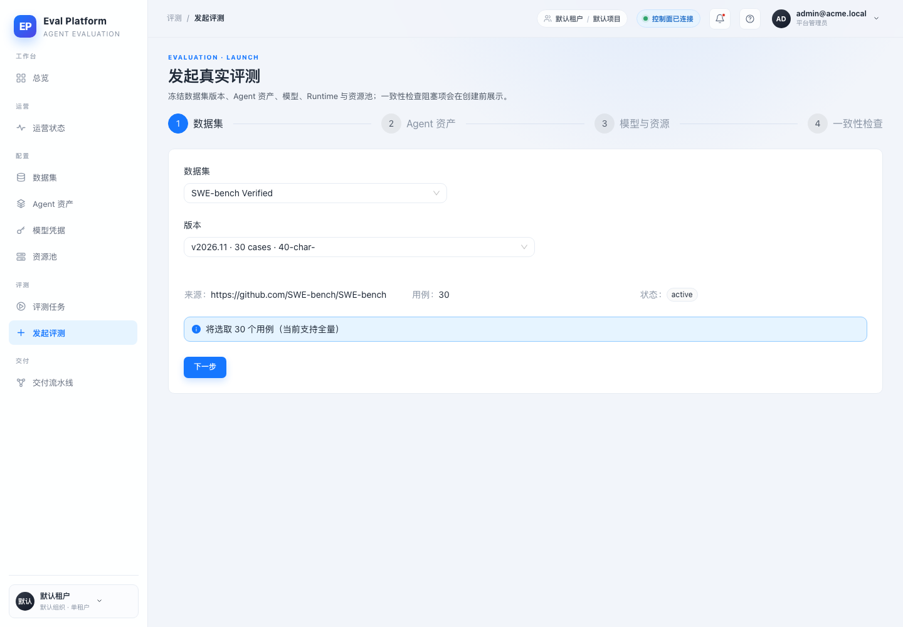
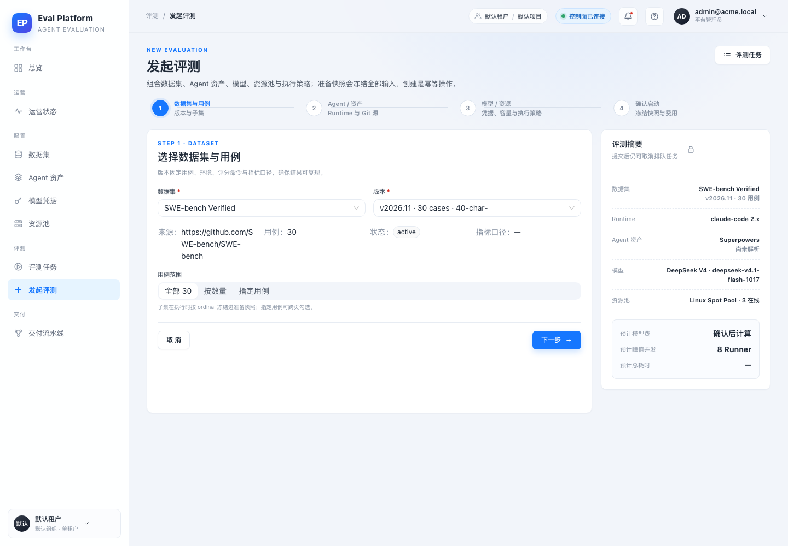
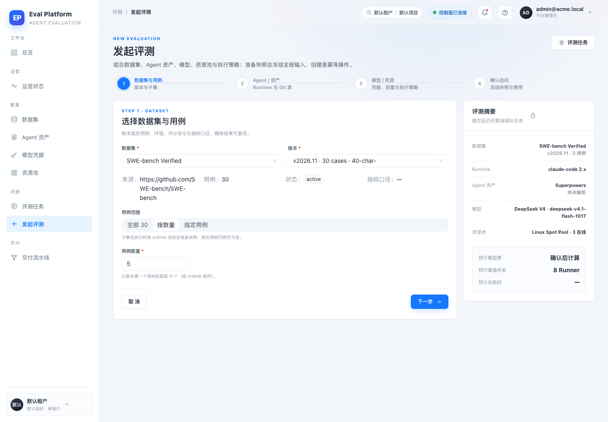
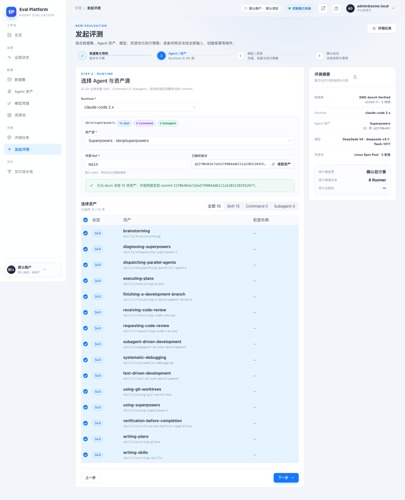
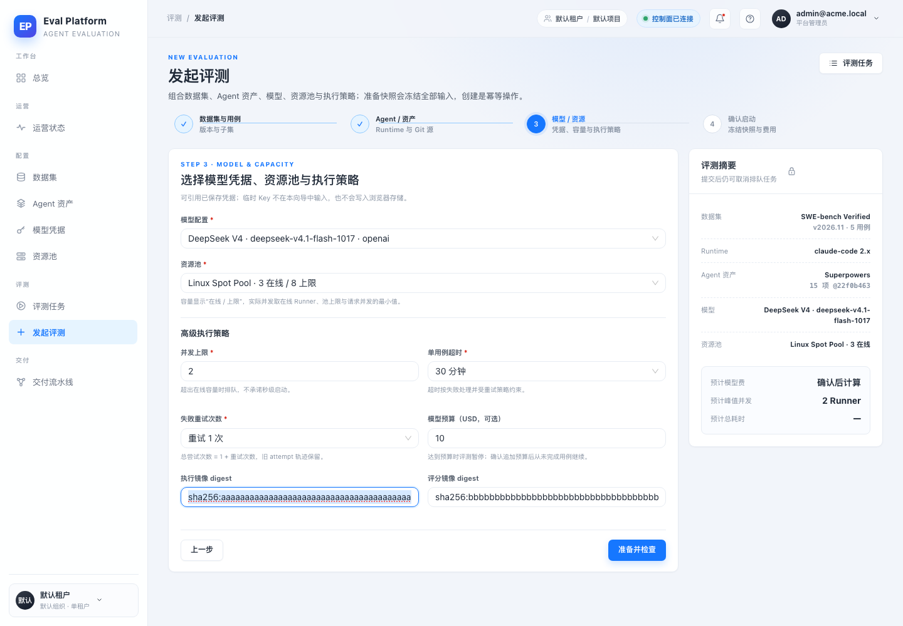
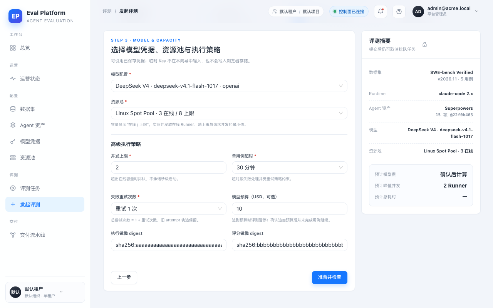
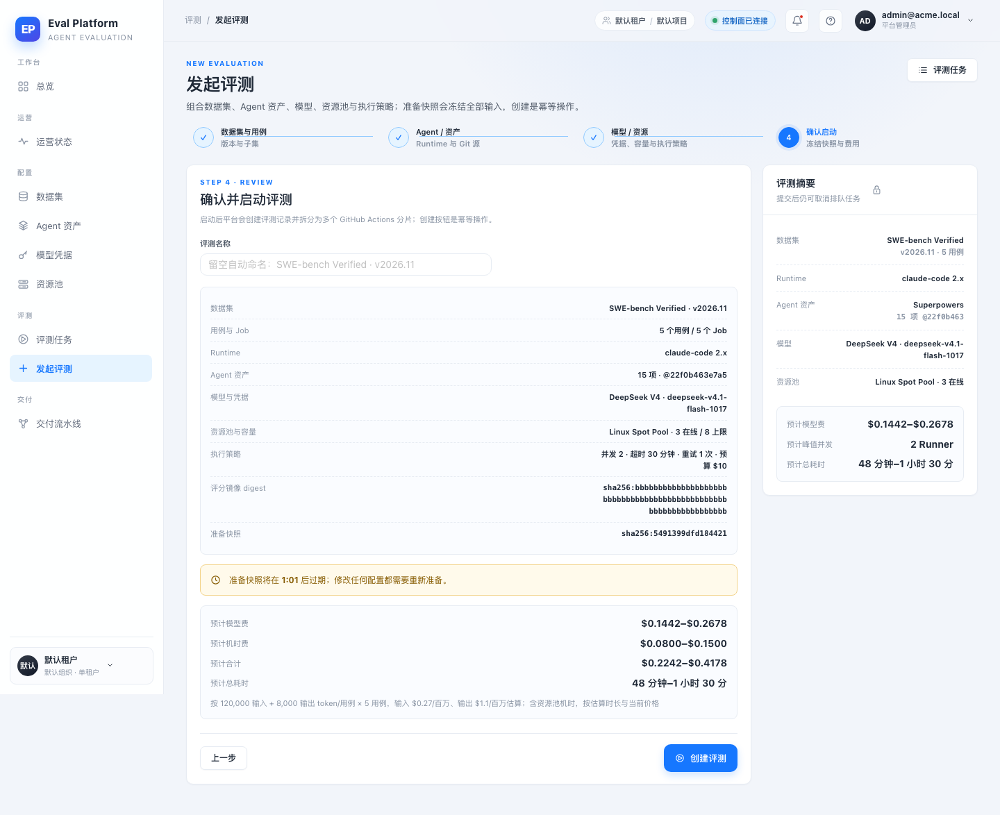
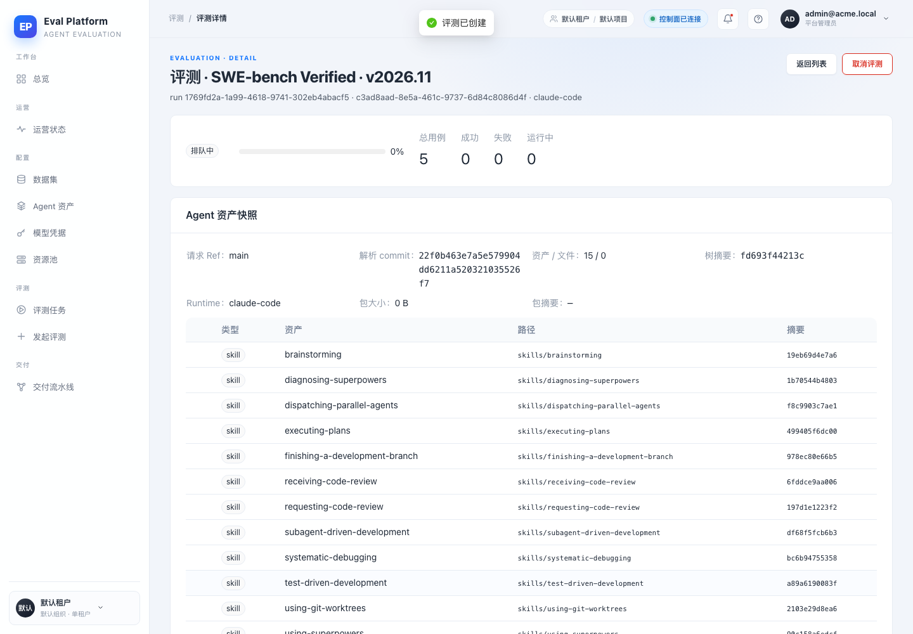
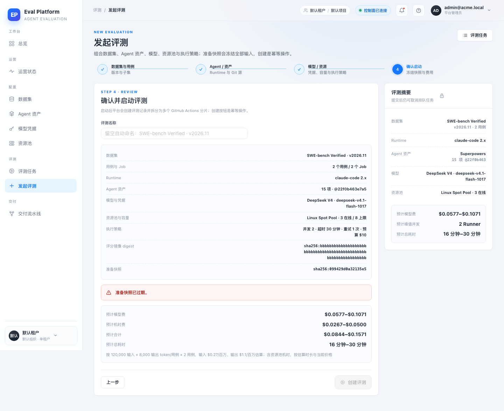
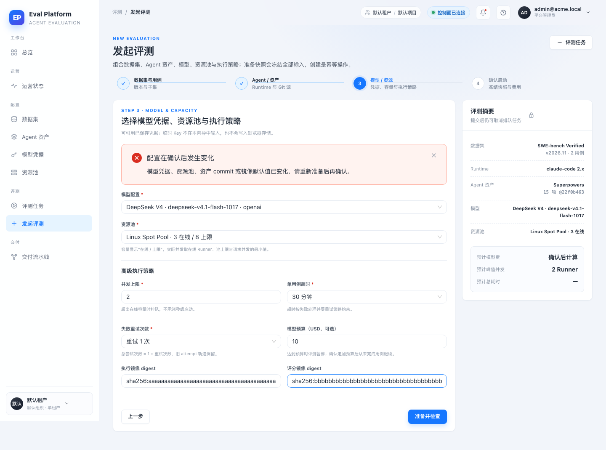
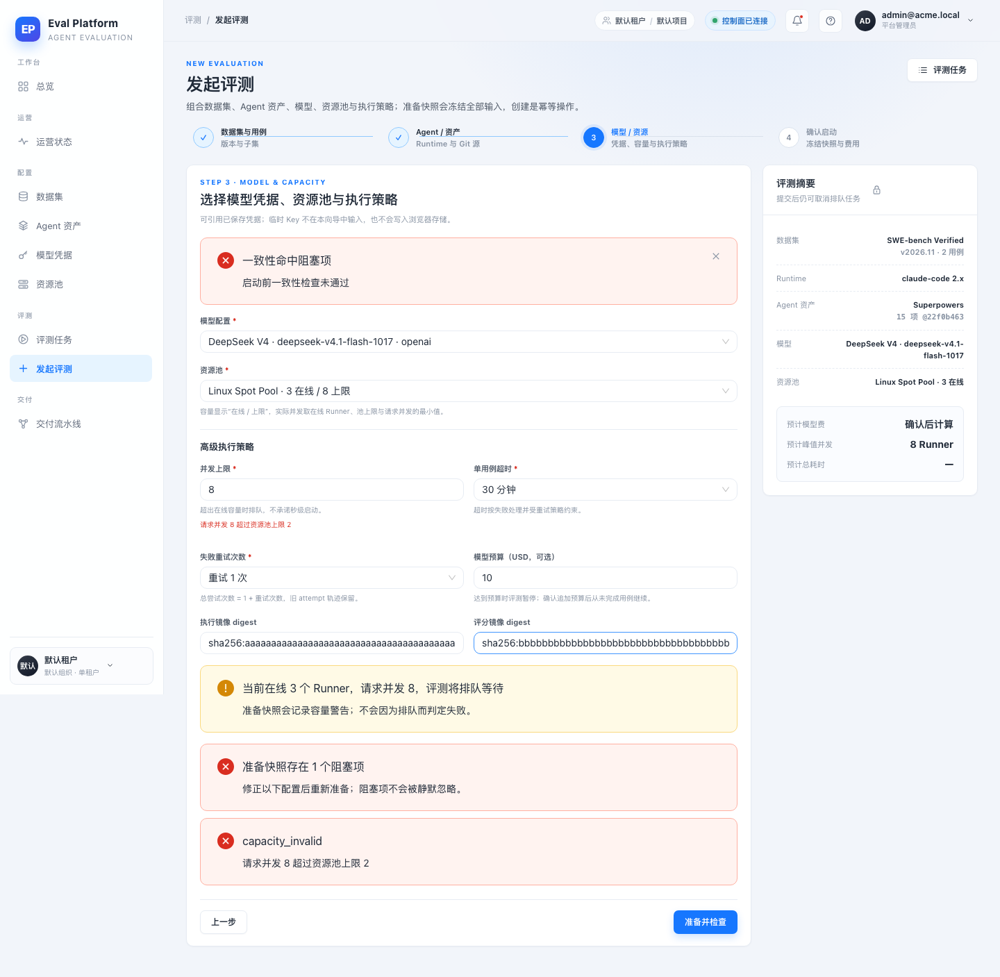
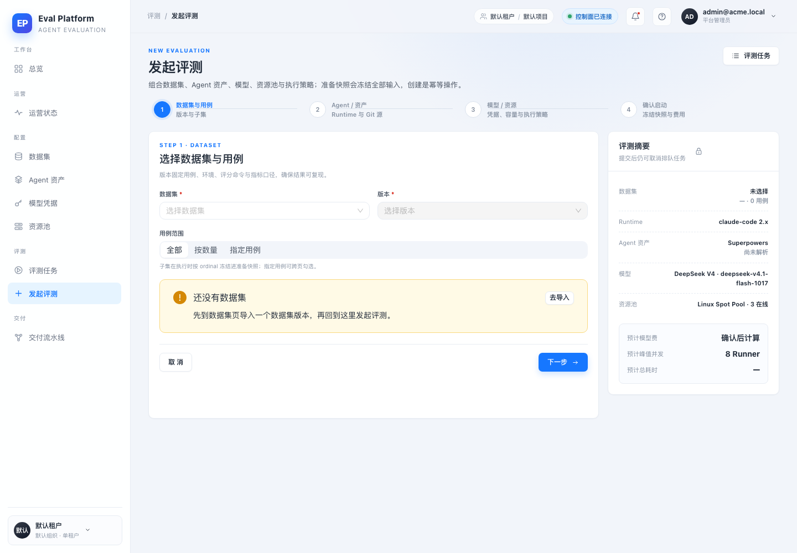
Automated Coverage Assessment
6 areas reviewed| 区域 | 覆盖 | 结论 | 建议 |
|---|---|---|---|
Conclusion
主路径与错误路径通过，未发现产品缺陷M5-04 的发起向导在真实登录、真实 API 与真实浏览器下走通数据集子集、资产快照、执行策略、准备快照、确认、幂等创建与错误回退；没有需要修复的缺陷。
- Before 基线是 origin/main @ 052dfb2 的独立 worktree 页面，同一后端与同一份数据，不是修改后页面的回放。
- 资产解析在浏览器冒烟开始前通过真实 GitHub API + 本地 S3 stub 完成；向导复用冻结快照，避免重复扫描，也避免把 M5-01 的解析交互算作本 PR 覆盖。
- 准备快照 TTL 在冒烟环境设为 60 秒以验证过期提示；生产默认 900 秒由配置控制。
- 本地使用 SQLite 与假模型凭据，未发起真实模型调用；真实执行、预算暂停与结果页面仍属 M3/M4/M5-05 的部署后冒烟范围。
- 无数据集空态通过拦截 API 响应生成证据，报告已明确标注，不冒充真实空库。
M5-04 · 发起评测向导与准备快照 · 本地开发栈浏览器冒烟